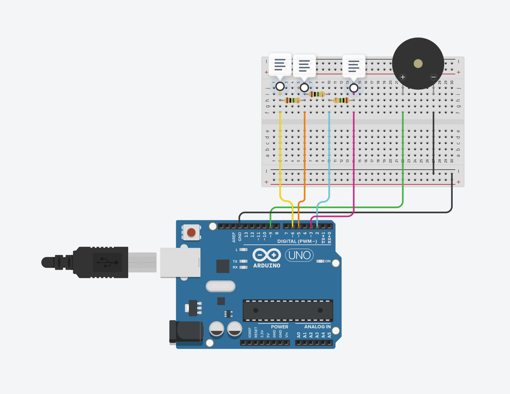
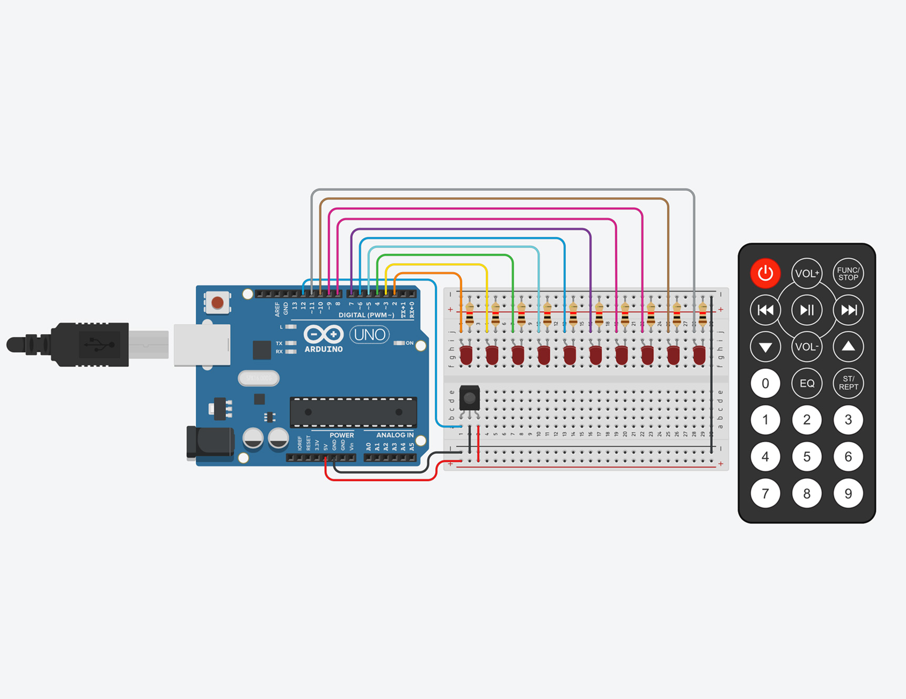

CAPACITIVE TOUCH MUSIC MACHINE
In week 8, we began working on more complex projects. We made a capacitive touch music machine first, in which we had to also learn to install the CapacitiveSensor plugin. The wires were able to get a value when touhed, and this worked as well when the wire is attached to other objects, such as a potato in our case. The value gained would then dictate the sound produced by the Piezo
Code Snippet
10 LED W/ REMOTE(failed)
Following the Capacitve Sensor Machine, we also tried to make the LED with Remote project, in which we would be able to control the LEDs with a remote. We installed the IRemote plugin, and had the IR sensor to connect with the remote. However, due to some technical difficulties (likely due to too many resistors), we failed to get the project to work during the class time.